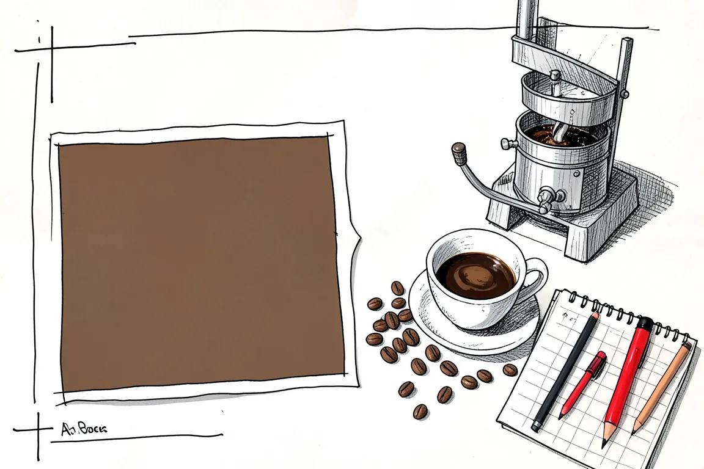

Pencil and ink lines, rough outlines, margin notes, arrows and annotations on a pale ground. It shows an idea before it is finished, and feels like a designer's notebook.

Core thesis
The page shows thinking: a rough line says the idea is open and honest.
Design principles
Draw every shape with a wobbly line: a stroke of 1.5px to 2.5px with a roughness of 1px to 2px and no perfect curve.
Use a paper ground (#FAF8F2) with a grid of 24px at 6% opacity, or a dot grid of 24px.
Colour in ink (#1D2A44) and add 1 highlighter accent (#FFE066) at 60% opacity for no more than 8% of the surface.
Add margin notes in a hand face at 18px to 22px with an arrow (a curved line of 2px) to the part they explain.
Hatch shadows with 3 to 6 diagonal lines at 45° and 4px gap instead of a soft shadow.
Number steps in circles of 28px to 36px and link them with dashed lines of 2px (6px dash, 4px gap).
Leave 2 or more boxes as empty placeholders with a cross, as in a wireframe.